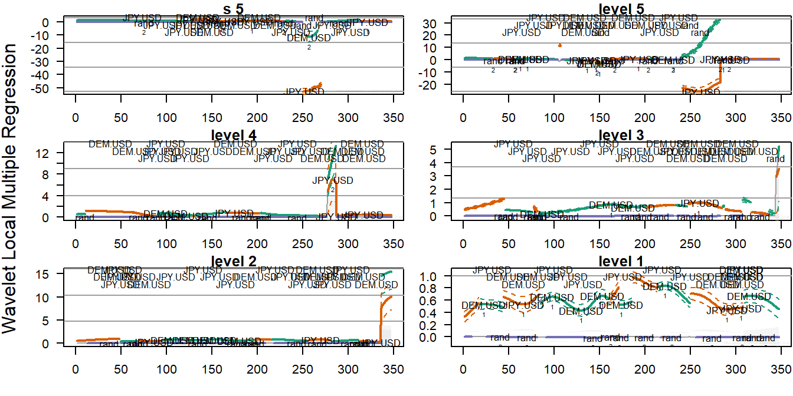

Wavelet Routines for Global and Local
Multiple Regression and Correlationwavemulcor-vignette.RmdAbstract
Wavelet routines that calculate single sets of wavelet multiple regressions and correlations (WMR and WMC), and cross-regressions and cross-correlations (WMCR and WMCC) from a multivariate time series. Also, dynamic versions of the routines allow the wavelet local multiple (cross-)regressions (WLMR and WLMCR) and (cross-)correlations (WLMC and WLMCC) to evolve over time. They can later be plotted in single graphs, as an alternative to trying to make sense out of several sets of wavelet correlations or wavelet cross-correlations. The code is based on the calculation, at each wavelet scale, of the square root of the coefficient of determination in a linear combination of variables for which such coefficient of determination is a maximum.
Data evolution along time may be the consequence of heterogeneous causes occurring at different time scales or frequencies. This is not easily taken into account by traditional time series analysis (TSA) either in the time domain or in the frequency domain (Fourier analysis). These two approaches take opposite ways of exposing the information present in the time series under study. Thus, time domain TSA provides full time resolution at the cost of discarding all frequency information and, conversely, Fourier analysis has full frequency resolution but no information in time. The more recent wavelet analysis gets sort of in the middle by offering a compromise, with partial resolution in both time and frequency domains, so that we can separate periodic components at different timescales and observe how they evolve over time (Percival and Walden 2000; Aguiar-Conraria and Soares 2014).
Just like the standard correlation measure, wavelet correlation aims to evaluate the degree of association between two time series but on a scale-by-scale basis. Since the seminal work of Whitcher etal. (2000) and the release of the waveslim package (Whitcher 2015), pairwise wavelet correlations haven been widely used in many different scientific fields. However, standard wavelet correlations are restricted to pairs of time series. This is not helpful when dealing with a set of several time series since we would need to handle many wavelet correlation graphs and even more cross-correlation graphs. In this case, we would rather ask for a single measure of the overall association among them. Of course, this is even complicated further if we want to extend the comparison to the actual plethora of regression coefficients involved.
The wavelet multiple regression and correlation analysis proposed in Fernández-Macho (2012, 2018) extends wavelet correlation methodology to handle multivariate time series. As their names imply, the wavelet multiple regression (WMR) and cross-regression (WMCR) estimate a complete set of regression coefficients, together with their corresponding standard deviations and significance statistics, related to the overall statistical relationships that might exist at different timescales among observations on a multivariate time series. As special cases, the wavelet multiple correlation (WMC) and cross-correlation (WMCC) refer to just the actual measure of the degree of overall statistical relationships within the multivariate set of variables.
Similarly, in a non-stationary context, the wavelet local multiple regression (WLMR) and correlation (WLMC) estimate and measure the time-evolving statistical relationships at different timescales within a multivariate data set. The usual practice of combining standard bivariate wavelet correlation analysis with rolling time windows is clearly inadequate as this needs to calculate, plot and compare a large number of wavelet regression and correlation graphs that now would require an additional time dimension. This renders pairwise multiscale comparisons pointless in practice. Besides, some consideration as to appropriateness of the usual rectangular rolling window needs to be taken into account. See Fernández-Macho (2018, 2019) for a brief introduction to wavelet methods and a discussion of the spectral properties of local windows needed for dynamic wavelet methods.
Package wavemulcor produces estimates of multiscale global or local multiple regressions and correlations along with approximate confidence intervals. It makes use of the maximal overlap discrete wavelet transform described in Percival and Walden (2000), and implemented by the modwt function in the waveslim R package developed by Whitcher (2015).
It contains several routines that calculate single sets of, respectively, global wavelet multiple regressions (WMC, WMR), global wavelet multiple cross-regressions (WMCC, WMCR) and time-localized wavelet multiple regressions (WLMC, WLMR) from a dataset of \(n\) variables. The code is based on the calculation, at each wavelet scale \(\lambda_j\), of the square root of the coefficient of determination in that linear combination of either global or locally weighted wavelet coefficients for which such coefficient of determination is a maximum. For reference, we can write such linear combination as \(w_{yj}=\beta w_{xj}\), where \(w_{yj}\) is the normalizing wavelet variable and \(\beta w_{xj}\) is the linear combination of the rest of wavelet variables. Package wavemulcor can be obtained from The Comprehensive R Archive Network (CRAN) at https://cran.r-project.org/package=wavemulcor.
These two wavelet routines produce estimates of multiscale multiple regressions together with their approximate confidence intervals.
The following example illustrates WMC with a tri-variate series consisting of the same exchange rate returns data as in Gençay etal. (2002), DEM-USD, JPY-USD, plus one random variable:
wf <- "d4" J <- trunc(log2(N))-3 demusd.modwt <- brick.wall(modwt(returns[,"DEM.USD"], wf, J), wf) jpyusd.modwt <- brick.wall(modwt(returns[,"JPY.USD"], wf, J), wf) xrand.modwt <- brick.wall(modwt(rnorm(length(returns[,"DEM.USD"])), wf, J), wf) xx <- list(demusd.modwt, jpyusd.modwt, xrand.modwt) names(xx) <- c("DEM.USD","JPY.USD","rand") Lst <- wave.multiple.correlation(xx)
The output from this function consists of a list of two elements:
xy.mulcor, a \(J\times 3\) matrix with as many rows as levels in the wavelet transform object. The first column provides the point estimate for the wavelet multiple correlation, followed by the lower and upper bounds from the confidence interval, and
YmaxR, a numeric vector giving, at each wavelet level, the index number of the normalizing wavelet variable \(w_y\) whose correlation is calculated (maximized by default) against a linear combination of the rest.
The output can be presented in a table or graph using the R code of our choice. A quick but nice option is to use the auxiliary routine plot_wave.multiple.correlation that produces a standard WMC plot:
The figure shows the wavelet multiple correlation for the exchange rate returns. The dashed lines correspond to the upper and lower bounds of the corresponding 95% confidence interval. The variables named on top1 give, at each scale, the largest multiple correlation obtained from a linear combination of the variables. As an option, we can overrule this by explicitly naming the normalizing variable.
For a complete regression output we can use WMR. A similar code chunk as the one before provides an example of its usage, but with the last line replaced by:
Lst <- wave.multiple.regression(xx)
It produces a first element with the same correlation output as wave.multiple.correlation plus a second element xy.mulreg with a list of relevant regression statistics, namely, the regression estimates at each wavelet level together with their standard deviations, confidence interval lower and upper bounds, the \(t\) statistic values and p-values, and the indexes of the regressors when sorted by significance.
As before, this output can be fed into R code to produce tables and graphs of our choice. Alternatively, the auxiliary routine plot_wave.multiple.regression will give us a standard WMR plot:
plot_wave.multiple.regression(Lst) # nsig=2)
The figure plots the wavelet multiple regression for the exchange rate returns, with different colors for each regression coefficient. The dashed lines correspond to the upper and lower bounds of their 95% confidence interval. Note that, in order not to crowd the plot excessively, we can choose to plot nsig regression coefficients only (the default is \(nsig=2\).) As before, the variables named on top give, at each scale, the largest multiple correlation from a linear combination of the variables. The names of the nsig most significant regressors are also printed along the regression wavelet line. The shaded area represent the compound 95% significance interval around zero.
Wavelet cross-regressions are, in principle, the same as wavelet regressions but with a temporal time shift between the normalizing wavelet variable \(w_y\) and its regressors \(w_x\) at each of the wavelet levels. If the shift is positive (lag) we say that \(y\) lags the rest of the variables at that wavelet level, if it is negative (lead) we say that \(y\) leads.
The next example uses WMCR (or WMCC) with the same tri-variate series of exchange rate returns data as before:
wf <- "d4" J <- trunc(log2(N))-3 lmax <- 36 demusd.modwt <- brick.wall(modwt(returns[,"DEM.USD"], wf, J), wf) jpyusd.modwt <- brick.wall(modwt(returns[,"JPY.USD"], wf, J), wf) rand.modwt <- brick.wall(modwt(rnorm(length(returns[,"DEM.USD"])), wf, J), wf) # --------------------------- xx <- list(demusd.modwt, jpyusd.modwt, rand.modwt) names(xx) <- c("DEM.USD","JPY.USD","rand") Lst <- wave.multiple.cross.regression(xx, lmax)
The output from this function is made up of several elements:2
xy.mulcor, similar as before but taking into account the time shifts. That is, it contains wavemulcor, lower, upper, three \(J\times lmax\) matrices of correlation coefficients and corresponding lower and upper bounds confidence interval bounds.
xy.mulreg, with a list of arrays containing relevant regression statistics for all wavelet levels, and lags and leads.
YmaxR, with the same content as wave.multiple.regression before.
For a compact visualization with no confidence intervals, the cross-correlation output can be fed into a heatmap_ auxiliary routine to obtain a standard heat map representation the WMCC:
heatmap_wave.multiple.cross.correlation(Lst, lmax) #, by=3, ci=NULL, pdf.write=NULL)
More generally, the output can also be fed into plot_ auxiliary routines to obtain a standard WMCC plot:
plot_wave.multiple.cross.correlation(Lst, lmax) #, by=2)
…and a standard WMCR plot:
plot_wave.multiple.cross.regression(Lst, lmax) #, by=2)
Both figures show, at one plot per wavelet level, the respective wavelet multiple cross-correlation and cross-regression coefficients for the exchange rate returns with their corresponding 95% confidence interval upper and lower bounds.
This wavelet routine produces an estimate of the multiscale local multiple correlation from a set of \(n\) variables together with approximate confidence intervals. The routine calculates one single set of wavelet multiple correlations over time that can be plotted in either one single heat map or \(J\) line graphs (the former is useful if confidence intervals are explicitly needed but the latter is usually the best graphic option).
The third example uses WLMR (or WLMC) with the same tri-variate series of exchange rate returns data as before:
wf <- "d4" M <- 30 window <- "gauss" #uniform" J <- trunc(log2(N))-3 demusd.modwt <- brick.wall(modwt(returns[,"DEM.USD"], wf, J), wf) jpyusd.modwt <- brick.wall(modwt(returns[,"JPY.USD"], wf, J), wf) xrand.modwt <- brick.wall(modwt(rnorm(length(returns[,"DEM.USD"])), wf, J), wf) xx <- list(demusd.modwt, jpyusd.modwt, xrand.modwt) names(xx) <- c("DEM.USD","JPY.USD","rand") Lst <- wave.local.multiple.regression(xx, M, window=window) #, ymaxr=1)
The output from this function has the following main elements:3
cor, similar as before but taking into the evolution over time. It contains val, lo, up, three matrices of wavelet correlation coefficients over time and corresponding lower and upper bounds confidence interval bounds.
reg, with a list of matrices containing relevant regression statistics for all wavelet levels over time.
YmaxR, with the same content as wave.multiple.regression before.
The output can be fed into a heatmap_ auxiliary routine to obtain a standard heat map, which is the recommended way to visualize the WLMC:
heatmap_wave.local.multiple.correlation(Lst) #, xaxt="s", ci=NULL, pdf.write=NULL)
The figure shows how the WLMC evolves both over time and across wavelet levels, the latter shown as time periods \((2^j,2^{j+1}]\) after conversion into their corresponding time units intervals.
As nice as they are, heat maps cannot offer the information provided by the confidence intervals and, besides, cannot be sensibly used for visualizing WLMR output. For those we need to use the plot_ auxiliary routines to obtain a standard WLMC plot:
plot_wave.local.multiple.correlation(Lst) #, xaxt="s")
…and a standard WLMR plot:
plot_wave.local.multiple.regression(Lst) #, xaxt="s")

Both figures show, at one plot per wavelet level, the respective wavelet local multiple correlation and regression coefficients for the exchange rate returns with their corresponding 95% confidence interval upper and lower bounds.
Just as you were expecting by now, there are also routines that calculate local regressions at different lags and leads. The output structure should be obvious once we have learned to handle the previous local and cross functions, since WLMCR, and the simpler WLMCC, are but a combination of both features.
wf <- "d4" M <- 30 window <- "gauss" #uniform" J <- trunc(log2(N))-3 lmax <- 5 demusd.modwt <- brick.wall(modwt(returns[,"DEM.USD"], wf, J), wf) jpyusd.modwt <- brick.wall(modwt(returns[,"JPY.USD"], wf, J), wf) rand.modwt <- brick.wall(modwt(rnorm(length(returns[,"DEM.USD"])), wf, J), wf) xx <- list(demusd.modwt, jpyusd.modwt, rand.modwt) names(xx) <- c("DEM.USD","JPY.USD","rand") Lst <- wave.local.multiple.cross.regression(xx, M, window=window, lag.max=lmax) #, ymaxr=1)
As before, there are also auxiliary heatmap_ and plot_ routines to handle standard heat maps and plots similar to the ones presented above but extended over the requested lags and leads.
For example, heatmap_wave.local.multiple.cross.correlation produces a page of \(J+1\) standard WLMC heat maps:
heatmap_wave.local.multiple.cross.correlation(Lst, lmax=lmax, lag.first=FALSE)
#, xaxt="s", ci=NULL, pdf.write=NULL)
Note that we can use the option lag.first=TRUE to alter the role of lags and levels in the plots. That is, it will make one plot per lag, where the vertical axis are wavelet periods, same as with heatmap_wave.local.multiple.correlation before.
heatmap_wave.local.multiple.cross.correlation(Lst, lmax=2, lag.first=TRUE) #, xaxt="s", ci=NULL, pdf.write=NULL)
Once again, if confidence intervals are required we need to use the plot_ auxiliary routines to obtain a standard WLMCC plots:
plot_wave.local.multiple.cross.correlation(Lst, lmax, lag.first=FALSE) #, xaxt="s")
plot_wave.local.multiple.cross.regression(Lst, lmax, nsig=2) #, xaxt="s")
Their respective outputs are each made up of as many graphs as wavelet levels and typically can extend several pages, therefore they will not be presented in this vignette. However, it is sucintly described in the documentation of the package and you are kindly invited to try it.
Aguiar-Conraria, L., and M. J. Soares. 2014. “The Continuous Wavelet Transform: Moving Beyond Uni-and Bivariate Analysis.” Journal of Economic Surveys 28 (2): 344–75. https://doi.org/10.1111/joes.12012.
Fernández-Macho, J. 2012. “Wavelet Multiple Correlation and Cross-Correlation: A Multiscale Analysis of Eurozone Stock Markets.” Physica A: Statistical Mechanics 391 (4): 1097–1104. https://doi.org/10.1016/j.physa.2011.11.002.
———. 2018. “Time-Localized Wavelet Multiple Regression and Correlation.” Physica A: Statistical Mechanics and Its Applications 492 (February): 1226–38. https://doi.org/10.1016/j.physa.2017.11.050.
———. 2019. “Package Wavemulcor: Wavelet Multiple Regression and Correlation in R.” Computing in Science & Engineering 21 (6): 63–73. https://doi.org/10.1109/mcse.2018.2875320.
Gençay, R., F. Selçuk, and B. Whitcher. 2002. An Introduction to Wavelets and Other Filtering Methods in Finance and Economics. San Diego: Academic Press.
Percival, D. B., and A. T. Walden. 2000. Wavelet Methods for Time Series Analysis. Cambridge, UK: Cambridge University Press. https://doi.org/10.1017/cbo9780511841040.
Whitcher, B. 2015. “Waveslim: Basic Wavelet Routines for One-, Two- and Three-Dimensional Signal Processing.” https://CRAN.R-project.org/package=waveslim.
Whitcher, B., P. Guttorp, and D. B. Percival. 2000. “Wavelet Analysis of Covariance with Application to Atmospheric Time Series.” Journal of Geophysical Research: Atmospheres 105 (D11): 14941–62. https://doi.org/10.1029/2000jd900110.
{ This feature needs Lst to be output from wave.multiple.regression.}↩
{ Alternatively, if only wavelet multiple cross-correlations are needed, we can use the legacy routine wave.multiple.cross.correlation(xx, lmax).}↩
{ Alternatively, if only wavelet local multiple correlations are needed, we can use the legacy routine wave.local.multiple.correlation(xx, lmax).}↩